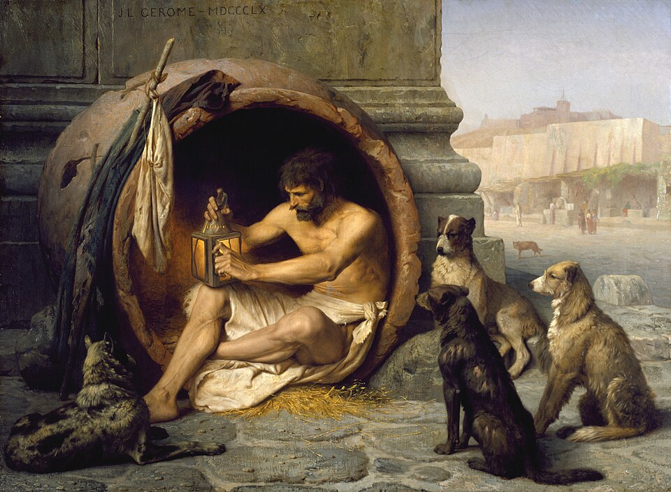
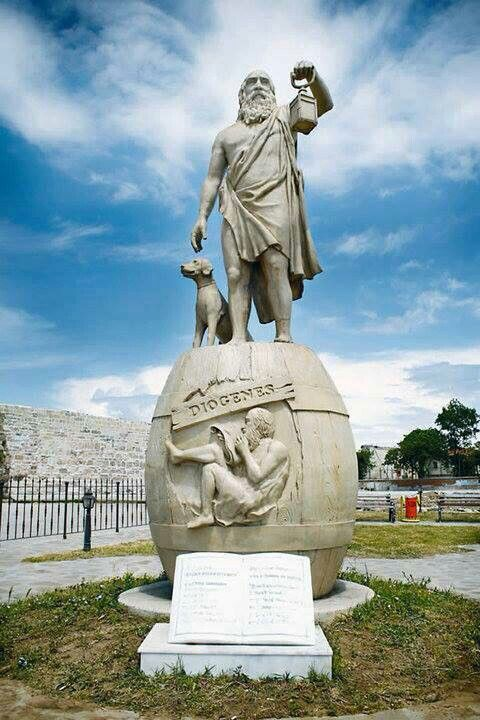
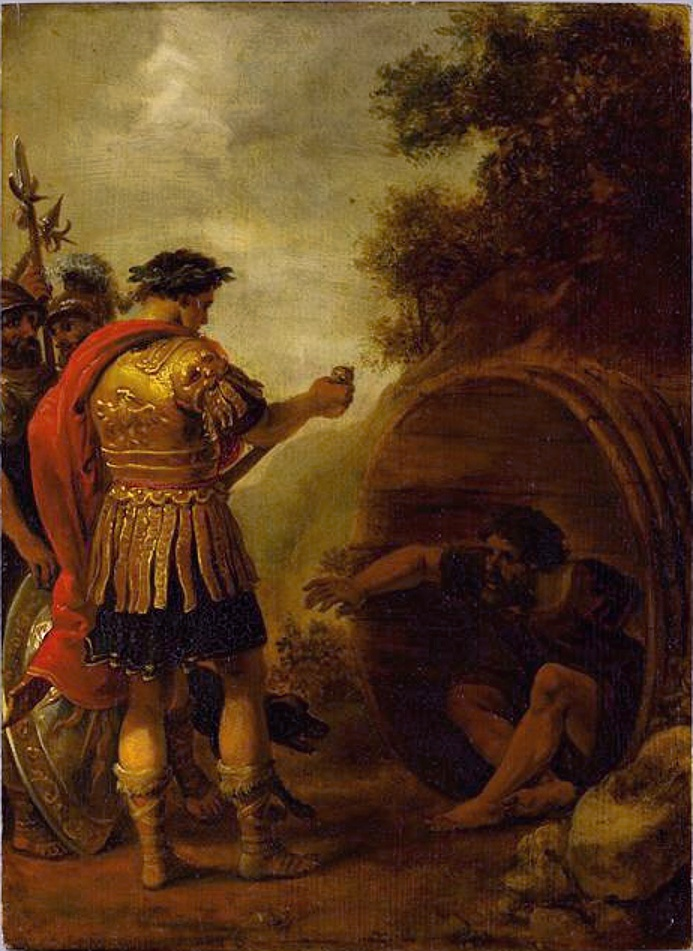

Who Was Diogenes of Sinope?
Diogenes of Sinope was an ancient Greek philosopher associated with Cynicism, a philosophical movement that emphasized virtue, self-sufficiency, simplicity, and living in accordance with nature rather than following unnecessary social conventions.
Diogenes became famous in antiquity for a deliberately unconventional way of life. He is traditionally portrayed as rejecting wealth, luxury, political status, and many ordinary social expectations. For him, philosophical ideas were not merely theories to be discussed; philosophy was supposed to be practiced through one's way of living.
Diogenes is also remembered for his sharp wit, provocative behavior, and famous encounters with powerful people, especially the stories involving Alexander the Great. Although many details about his life come from later ancient sources, his reputation became one of the most distinctive in ancient Greek philosophy.
Diogenes of Sinope: Quick Facts
- Name — Diogenes of Sinope
- Also known as — Diogenes the Cynic
- Era — Fourth century BCE
- Associated tradition — Cynicism
- Birthplace — Sinope, a Greek city on the Black Sea
- Approximate dates — c. 404–323 BCE
- Known for — Cynic philosophy, simplicity, self-sufficiency, virtue, freedom, and criticism of social conventions
- Famous association — Alexander the Great
- Philosophical ideal — Living according to nature and developing independence from unnecessary desires
- Surviving writings — No secure body of writings by Diogenes survives
Diogenes of Sinope and the World of Ancient Greece

Diogenes lived during the fourth century BCE, a period of major political and intellectual change in the Greek world. He belonged to the generation after Socrates and lived during the period in which Greek philosophical schools developed increasingly diverse approaches to ethics, politics, knowledge, and the good life.
Cynicism developed from the Socratic tradition and became especially associated with a radical criticism of conventional ideas about wealth, reputation, political power, and social status.
Diogenes became the movement's most famous representative. Unlike philosophers whose influence is primarily known through surviving books, Diogenes is remembered largely through reports about his actions, sayings, conversations, and unusual way of life.
Why Is Diogenes of Sinope Important?
Diogenes is important because he pushed the Socratic concern with virtue and the good life toward an unusually radical conclusion. He challenged the assumption that wealth, comfort, social reputation, and political influence are necessary for happiness.
His philosophy emphasized the idea that a person should become independent of unnecessary desires and learn to live with fewer material and social dependencies.
Diogenes also demonstrated an important feature of Cynic philosophy: philosophy should be expressed through the way a person lives. His life itself became a philosophical argument against excessive attachment to conventional values.
What Did Diogenes Believe?
Diogenes is traditionally associated with the Cynic belief that virtue is more important than wealth, status, pleasure, or social approval.
He rejected many conventional assumptions about what makes a person successful or happy. Instead of accumulating possessions and seeking social recognition, the Cynic ideal encouraged a simpler life based on self-sufficiency and freedom from unnecessary desires.
Diogenes also emphasized living according to nature rather than being controlled by social convention. This did not mean simply living like an animal. It meant questioning artificial desires and customs and learning to distinguish what is genuinely necessary for human life from what society merely teaches people to value.
His philosophy therefore connected ethics with practical discipline. A person could become freer by training themselves to need less.
What Is Cynicism? Diogenes and Cynic Philosophy
Cynicism was an ancient Greek philosophical movement associated with a Socratic approach to ethics. Its central concern was how a person should live in order to become virtuous and free.
The Cynics challenged conventional assumptions about wealth, honor, political status, luxury, and social reputation. They argued that dependence on such things could make people less free rather than happier.
Diogenes became the most famous Cynic because he turned these principles into an extremely unconventional lifestyle. Ancient accounts portray him deliberately minimizing possessions and ignoring many ordinary social expectations.
The philosophical point was not simply to behave strangely. The unconventional behavior was connected to a deeper ethical argument: if a desire is unnecessary, becoming dependent on it can weaken one's freedom.
Diogenes and the Cynic Idea of Living According to Nature
One of the central ideas associated with Diogenes is the contrast between nature and convention. Cynic philosophers questioned whether customs accepted by society were necessarily good simply because they were traditional.
Diogenes is therefore associated with a life that deliberately simplified ordinary human needs. Food, shelter, clothing, and other necessities were treated differently from luxuries that people might desire because of social expectations.
Living according to nature was connected with the pursuit of autarkeia, or self-sufficiency. The less a person depends upon external possessions and social approval, the less power those things have over their happiness.
This is one of the reasons Diogenes remains important in the history of ethical philosophy: he treated freedom not primarily as political power, but as freedom from unnecessary dependence.
Why Did Diogenes Live Such a Simple Life?

Diogenes' simple lifestyle was closely connected with his ethical philosophy. Cynic thinkers argued that many human desires are created or intensified by social conventions rather than by genuine necessity.
By reducing his dependence on possessions and comfort, Diogenes attempted to demonstrate that a person could live well with far less than conventional society considered necessary.
Ancient sources famously describe Diogenes as living in a large ceramic container, often translated as a "barrel." The original Greek term is generally understood as referring to a large storage jar or pithos, rather than the wooden barrel suggested by the popular image.
The famous image should nevertheless be understood cautiously because much of Diogenes' biography comes from later literary reports rather than contemporary records.
Diogenes on Virtue, Freedom, and Happiness
For Diogenes, the good life was closely connected with virtue. External possessions such as wealth, reputation, and political power were not reliable foundations for happiness because they depended on circumstances outside a person's complete control.
The Cynic approach instead emphasized developing the character needed to remain independent of unnecessary external goods.
Diogenes is also associated with the idea that philosophical training is necessary. A person cannot simply declare themselves independent; they must develop the discipline to resist desires and social pressures that make them dependent.
In this sense, Cynic philosophy was practical ethics. Philosophy was supposed to transform the individual rather than remain only an intellectual exercise.
Why Did Diogenes Carry a Lantern in Daylight?

One of the most famous stories about Diogenes says that he walked through Athens carrying a lantern in broad daylight while claiming to be looking for a person.
The story is preserved in later ancient testimony and is usually interpreted as a philosophical criticism of human behavior. Diogenes was supposedly suggesting that genuinely virtuous people were difficult to find even though the city was full of people.
The story illustrates his broader method of using provocative actions to challenge conventional ideas about virtue, honesty, and social respectability.
Because the account comes from later sources, it should be treated as an ancient anecdote about Diogenes rather than as a securely documented event recorded by Diogenes himself.
Diogenes and Alexander the Great: What Really Happened?

The most famous story about Diogenes concerns his reported encounter with Alexander the Great.
According to the ancient tradition, Alexander approached Diogenes and offered to grant him a request. Diogenes supposedly asked Alexander simply to move out of the sunlight.
The story became famous because it presents a striking contrast between political power and philosophical independence. Alexander was one of the most powerful rulers of the ancient world, while Diogenes supposedly demonstrated that he did not need wealth, political favors, or royal protection.
The encounter is preserved in ancient sources, but the exact historical circumstances cannot be independently established. It is therefore best understood as an important ancient anecdote that expresses the Cynic ideal rather than as an event whose every detail can be verified.
What Did Diogenes Teach Through His Encounter with Alexander?
The story of Diogenes and Alexander became philosophically important because it dramatizes the Cynic attitude toward external power.
Alexander could offer Diogenes possessions or favors, but the Cynic philosopher supposedly regarded these things as unnecessary. The encounter therefore illustrates the idea that a person who needs very little is difficult for powerful people to control through material rewards.
The anecdote also expresses Diogenes' rejection of conventional hierarchy. He is portrayed as speaking to a king without treating the king's social position as a reason for submission or admiration.
Diogenes and the Idea of Being a Citizen of the World
Diogenes is traditionally associated with one of the earliest explicit expressions of cosmopolitanism in Western philosophy.
When asked where he came from, he is reported to have described himself as a citizen of the world, or kosmopolitēs.
The statement is significant because it refuses to define a person's identity entirely through membership in a particular city. Instead, Diogenes is portrayed as identifying himself with the wider human and cosmic community.
Later Stoic philosophers developed more systematic forms of cosmopolitan thought. Diogenes' Cynic position is therefore important in the history of the idea, although his surviving evidence does not provide a complete political theory of world citizenship.
What Is Self-Sufficiency in Diogenes' Philosophy?
Self-sufficiency, often discussed using the Greek concept autarkeia, is central to the Cynic way of life.
Self-sufficiency does not mean that a person literally needs no other human being. In the Cynic context, it concerns reducing dependence on unnecessary external goods and developing the ability to live well without constantly seeking wealth, luxury, or social approval.
Diogenes' extreme lifestyle was intended to demonstrate this principle practically. By learning to live with fewer possessions and comforts, a person could become less vulnerable to changes in fortune.
The philosophical goal was therefore freedom through disciplined simplicity rather than wealth through accumulation.
Famous Sayings and Anecdotes Associated with Diogenes
Diogenes is one of the most frequently quoted philosophers of antiquity. However, many sayings associated with him survive through later ancient authors rather than through writings by Diogenes himself.
“I am a citizen of the world.”
This saying is associated with Diogenes' rejection of a narrowly defined civic identity and is important in the history of philosophical cosmopolitanism.
Diogenes and the Lantern
The famous lantern story portrays Diogenes searching for a genuinely virtuous person in broad daylight.
Diogenes and Alexander
The story of Alexander being asked to move out of Diogenes' sunlight expresses the Cynic rejection of dependence on wealth and political power.
These stories are philosophically valuable, but they should not all be presented as verbatim quotations from Diogenes. Ancient biography frequently preserved philosophical ideas through memorable anecdotes.
Did Diogenes of Sinope Write Any Books?
No complete philosophical writings by Diogenes of Sinope survive. Unlike Plato or Aristotle, we cannot study his philosophy through a surviving body of works written by him.
Our knowledge of Diogenes comes largely from later ancient authors, especially biographical and philosophical traditions that preserved stories about Cynic philosophers.
This creates an important historical limitation. Some statements attributed to Diogenes may reflect genuine Cynic teachings, while others may have been shaped by later writers who wanted to illustrate his distinctive character.
For this reason, the safest way to study Diogenes is to distinguish between ancient testimony and claims that can be established directly from surviving writings.
How Was Diogenes Influenced by Socrates?
Diogenes belongs to a philosophical tradition strongly influenced by Socrates. Socrates had emphasized the importance of examining one's life and had challenged conventional assumptions about wealth, reputation, and virtue.
The Cynics pushed some of these themes in a more radical direction. Instead of merely questioning conventional values through dialogue, Diogenes is portrayed as making his entire lifestyle a demonstration of philosophical independence.
The relationship between Socrates and Cynicism is therefore important for understanding Diogenes. The Cynic movement can be viewed as one branch of the wider post-Socratic philosophical world.
Was Antisthenes the Teacher of Diogenes?
Ancient tradition connects Diogenes with Antisthenes, a philosopher associated with the Socratic tradition and commonly regarded as an important predecessor of Cynicism.
Later sources portray Diogenes as becoming associated with Antisthenes' philosophical tradition and carrying its emphasis on virtue and independence to an extreme.
The exact historical relationship between the two men is difficult to reconstruct because the evidence comes from later sources. It is safer to describe Antisthenes as a major figure in the tradition that led to Cynicism than to present every detail of their relationship as certain historical fact.
Diogenes' Main Philosophical Ideas
Although Diogenes left no secure body of surviving philosophical writings, several ideas are strongly associated with the Cynic tradition represented by him.
Virtue Above Wealth
Diogenes is associated with the view that virtue is more valuable than wealth, possessions, reputation, or social status.
Living According to Nature
Cynic philosophy emphasized living according to nature rather than allowing artificial social conventions to determine one's desires.
Self-Sufficiency
Diogenes' lifestyle demonstrated the Cynic ideal of reducing dependence on external goods and becoming capable of living with fewer necessities.
Freedom from Social Convention
Diogenes deliberately challenged conventional expectations in order to expose assumptions about respectability, wealth, status, and proper behavior.
Philosophy as a Way of Life
For the Cynics, philosophy was not merely theoretical knowledge. A philosophical commitment had to be expressed through one's actions and habits.
Cosmopolitanism
Diogenes is associated with the claim that he was a citizen of the world, an important early expression of a philosophical identity extending beyond the boundaries of a particular city.
Diogenes' Philosophy of Life Explained
Diogenes' philosophy can be understood as a radical attempt to answer one of philosophy's oldest ethical questions: What does a person actually need in order to live well?
His answer was very different from the assumptions of ordinary society. He believed that people often make themselves unhappy by becoming dependent on things they do not genuinely need.
Wealth, luxury, reputation, political influence, and social approval can become sources of dependence. The Cynic response was to train the individual to need less.
In this sense, Diogenes' philosophy was simultaneously ethical, psychological, and practical. It asked people to change their desires rather than simply trying to acquire everything they desire.
Why Is Diogenes Famous for His Unusual Lifestyle?
Diogenes became famous because he practiced Cynic principles in an unusually visible and provocative way.
Ancient accounts portray him as minimizing possessions, rejecting luxury, criticizing social conventions, and behaving in ways that challenged conventional ideas about dignity and respectability.
His lifestyle was therefore part of his philosophical method. Instead of merely telling people that wealth and status were not necessary for happiness, he attempted to demonstrate the claim through his own life.
This approach explains why Diogenes became such a memorable figure. His philosophy was difficult to separate from the dramatic example he created through his behavior.
Diogenes' Influence on Cynicism and Stoicism
Diogenes became the central figure associated with the Cynic tradition. His emphasis on virtue, independence, simplicity, and freedom from unnecessary external desires influenced later philosophical discussions about the good life.
Cynicism also had an important relationship with the development of Stoicism. The Stoic philosopher Zeno of Citium is traditionally associated with studying under the Cynic Crates, who continued the Cynic tradition after Diogenes.
Stoicism developed a much more systematic philosophical framework than Cynicism, including theories of logic, physics, and ethics. Even so, the two traditions share important ethical themes, especially the rejection of excessive dependence on external goods and the importance of virtue.
Diogenes therefore occupies an important position in the history of ancient ethical philosophy, particularly in the development of ideas about virtue, independence, and the good life.
What Can We Learn from Diogenes' Philosophy?
Diogenes raises a philosophical challenge that remains relevant: How much of what we want is actually necessary for a good life?
His philosophy questions the assumption that happiness automatically increases with wealth, possessions, social recognition, or political influence.
It also raises questions about conformity. If a society considers something valuable, does that automatically make it valuable? Diogenes believed philosophical examination should be willing to challenge even widely accepted conventions.
His approach remains provocative because it turns philosophy into a test of one's actual way of life rather than simply a subject of intellectual discussion.
What Do We Actually Know About Diogenes of Sinope?
Diogenes is a particularly important example of the difficulties involved in studying ancient philosophers whose writings do not survive.
Relatively Well-Attested
- Diogenes was associated with Sinope.
- He became the most famous representative of ancient Cynicism.
- Ancient philosophical traditions associate him with simplicity, self-sufficiency, virtue, and living according to nature.
- He became famous for challenging social conventions.
- Later philosophical traditions preserved many sayings and anecdotes associated with him.
Traditionally Attributed
- His association with living in a large ceramic jar or pithos.
- The famous encounter with Alexander the Great.
- The story of carrying a lantern while searching for a person.
- Various witty replies and provocative actions.
Uncertain or Difficult to Verify
- The precise historical circumstances of many famous anecdotes.
- The exact wording of sayings attributed to Diogenes.
- The complete details of his philosophical teaching.
- The exact historical relationship between Diogenes and Antisthenes.
- Whether every anecdote preserved by later writers accurately represents an event from Diogenes' life.
How Do We Know About Diogenes?
Our knowledge of Diogenes comes mainly from later ancient sources rather than from surviving works written by Diogenes himself.
Diogenes Laertius
Diogenes Laertius is especially important for the later ancient tradition about Diogenes and other Greek philosophers. His Lives of Eminent Philosophers preserves numerous stories, sayings, and philosophical reports concerning the Cynics.
Other Ancient Philosophical Sources
Diogenes is also discussed indirectly in philosophical traditions that examine Cynicism and its relationship to Socratic ethics and later Hellenistic philosophy.
The Problem of Ancient Anecdotes
Ancient philosophical biographies frequently used memorable stories to illustrate a philosopher's character or teachings. Such stories are valuable historical evidence, but they should not automatically be treated as verbatim records of events.
For this reason, claims about Diogenes should be presented with appropriate historical caution, especially when discussing famous quotations and dramatic encounters.
Diogenes and the Cynic School of Philosophy
Diogenes is the philosopher most strongly associated with the mature image of ancient Cynicism.
The Cynics emphasized practical ethics and argued that human beings should cultivate virtue rather than pursue conventional measures of success.
- Virtue — The foundation of the good life.
- Self-sufficiency — Reducing dependence on external goods.
- Nature — Living in accordance with what is genuinely necessary rather than artificial convention.
- Freedom — Becoming less controlled by wealth, reputation, and unnecessary desires.
- Philosophical practice — Demonstrating philosophy through one's way of life.
Diogenes' extreme lifestyle made these principles especially visible and helped establish his reputation as the archetypal Cynic philosopher.
Important Ideas in Diogenes' Cynic Philosophy
Virtue
Virtue is treated as more important than external possessions, reputation, or wealth.
Autarkeia
Autarkeia refers to self-sufficiency and independence from unnecessary external needs.
Nature
Cynic philosophy contrasts living according to nature with excessive dependence on social conventions.
Convention
Social conventions are customs and expectations that may be accepted by society without necessarily being examined philosophically.
Freedom
Diogenes' philosophy connects freedom with reducing dependence on external goods and social approval.
Cosmopolitanism
Diogenes is traditionally associated with the idea of being a citizen of the world, an early expression of cosmopolitan identity.
Diogenes of Sinope Explained Simply
Diogenes was an ancient Greek philosopher associated with Cynicism. Instead of believing that wealth, status, luxury, and social approval were necessary for happiness, he argued for a simpler and more independent way of life.
He believed that people should develop virtue, reduce unnecessary desires, and live according to nature rather than allowing social conventions to determine everything they value.
- Philosopher: Diogenes of Sinope
- School: Cynicism
- Main concern: How should a person live?
- Central value: Virtue
- Important ideal: Self-sufficiency
- Major criticism: Dependence on wealth, status, and social convention
- Famous association: Alexander the Great
- Historical influence: Cynicism and later Stoic ethical thought
A Famous Saying Associated with Diogenes
“I am a citizen of the world.”
Frequently Asked Questions About Diogenes of Sinope
Who was Diogenes of Sinope?
Diogenes of Sinope was an ancient Greek philosopher associated with Cynicism. He became famous for advocating virtue, simplicity, self-sufficiency, and independence from unnecessary social and material desires.
What is Diogenes famous for?
Diogenes is famous for Cynic philosophy, his unconventional lifestyle, his criticism of social conventions, and famous ancient anecdotes involving figures such as Alexander the Great.
What did Diogenes believe?
Diogenes is associated with the belief that virtue is more important than wealth, status, luxury, and social approval. He emphasized self-sufficiency and living according to nature.
What is Cynicism according to Diogenes?
Cynicism was an ancient philosophical tradition that emphasized virtue, simplicity, self-sufficiency, and freedom from unnecessary dependence on social conventions and external goods.
Why did Diogenes live in a barrel?
Ancient sources describe Diogenes as living in a large ceramic container, often translated popularly as a "barrel." The story is associated with his Cynic commitment to extreme simplicity and independence from conventional material comforts.
Did Diogenes really live in a barrel?
Ancient testimony describes Diogenes living in a large ceramic vessel, but the popular image of a wooden barrel is misleading. The Greek term is generally understood as referring to a large storage jar or pithos.
Did Diogenes really meet Alexander the Great?
Ancient sources preserve a famous story about an encounter between Diogenes and Alexander the Great. The story is important in the philosophical tradition, although the precise historical details cannot be independently verified.
What did Diogenes say to Alexander the Great?
According to the famous ancient anecdote, Alexander offered Diogenes a request, and Diogenes asked him to move out of his sunlight. The story illustrates the Cynic's indifference to wealth and political power.
Why did Diogenes carry a lantern during the day?
An ancient anecdote says that Diogenes carried a lantern during the day while searching for a person. The story is commonly interpreted as a criticism of the difficulty of finding genuine virtue among people.
What does "citizen of the world" mean in Diogenes' philosophy?
Diogenes is traditionally reported to have described himself as a citizen of the world. The statement is important in the history of cosmopolitanism because it places human identity beyond membership in one particular city.
Was Diogenes a Stoic?
No. Diogenes was associated with Cynicism, not Stoicism. However, Cynicism influenced later Stoic philosophy, particularly through Cynic teachers such as Crates of Thebes and the development of ethical ideas about virtue and independence from external goods.
Did Diogenes write any books?
No complete philosophical writings by Diogenes survive. Much of what we know about him comes from later ancient reports, anecdotes, and philosophical traditions.
Who influenced Diogenes?
Diogenes is traditionally connected with the Socratic philosophical tradition and with Antisthenes, an important predecessor of Cynicism. The precise historical details of their relationship are uncertain.
Why is Diogenes important in philosophy?
Diogenes is important because he turned philosophical ideas about virtue, freedom, simplicity, and independence into an extreme way of life. His Cynic philosophy influenced later ethical thought, particularly the development of Stoicism.
Related Ancient Greek Philosophers
Diogenes belongs to the Socratic and Cynic traditions of ancient Greek philosophy. Explore the philosophers who developed different ideas about virtue, knowledge, reality, politics, and the good life.
Philosophical Schools Connected to Diogenes
Diogenes is most closely associated with Cynicism. His philosophical tradition also influenced later Stoic ethics and contributed to the development of ideas concerning virtue, self-sufficiency, freedom, and cosmopolitanism.
Philosophy Branches Connected to Diogenes
Diogenes' philosophy is especially connected with ethics because his central concern was how human beings should live. His criticism of social conventions also raises questions about human values, freedom, society, and the relationship between individual life and social expectations.
Why Diogenes of Sinope Still Matters
Diogenes of Sinope remains one of the most striking figures in the history of ancient philosophy. His importance does not come from a surviving philosophical system or a collection of books. Instead, it comes from the radical way in which he connected philosophical ideas with everyday life.
His central challenge remains simple but difficult: Do we actually need the things society tells us we need in order to live well?
By questioning wealth, reputation, luxury, social convention, and dependence on external goods, Diogenes made the philosophical search for the good life into a practical experiment.
His Cynic philosophy influenced later ethical traditions and helped shape ideas about virtue, independence, simplicity, and cosmopolitan identity. Even when his famous anecdotes cannot be verified in every detail, the philosophical questions associated with him remain an important part of ancient Greek thought.
Explore Great Philosophers
Why Did Diogenes Reject Social Conventions?
Diogenes became famous for deliberately violating or questioning conventional expectations. His actions were intended to expose what Cynics regarded as the artificial character of many social values.
Instead of accepting a custom simply because society approved of it, Diogenes encouraged people to ask whether the custom contributed to genuine virtue and human flourishing.
This is why his philosophy can appear deliberately provocative. His behavior was often designed to make people uncomfortable with ideas they normally accepted without examination.
His criticism was therefore philosophical as well as social: what society calls respectable is not necessarily what is good.